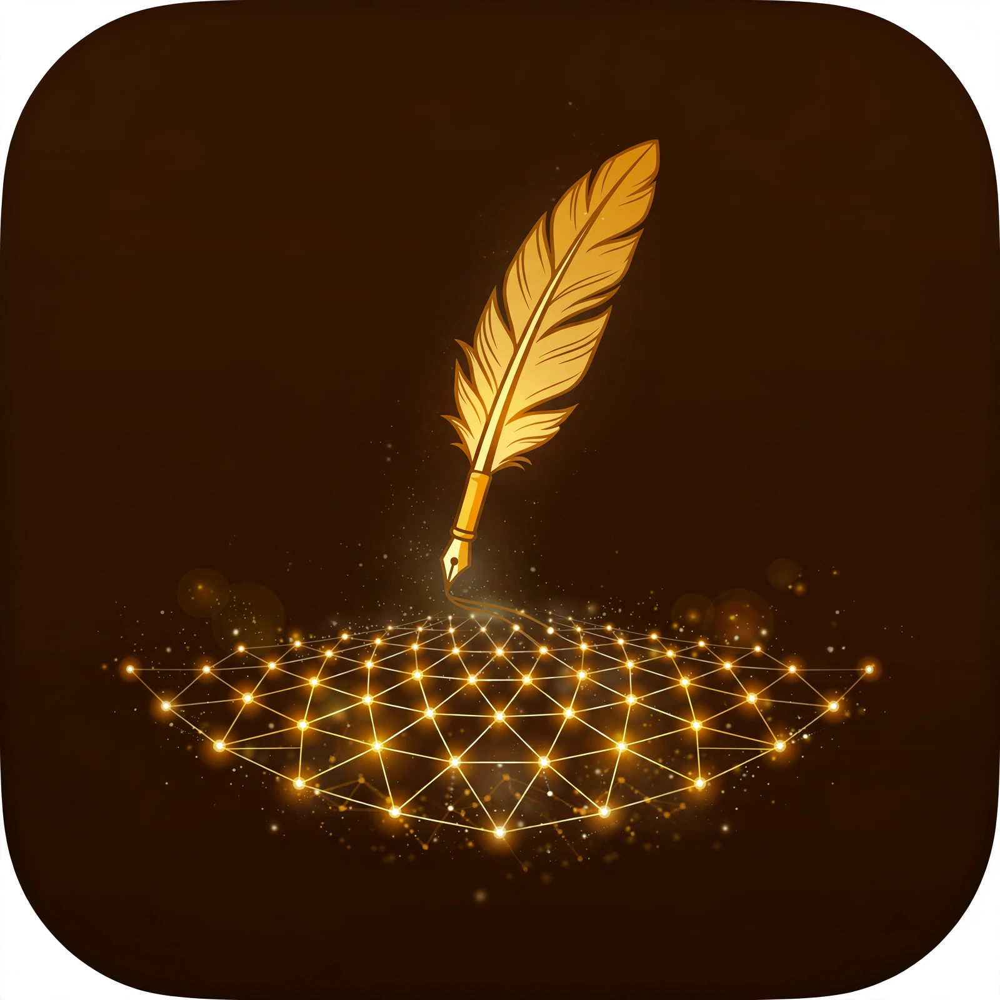
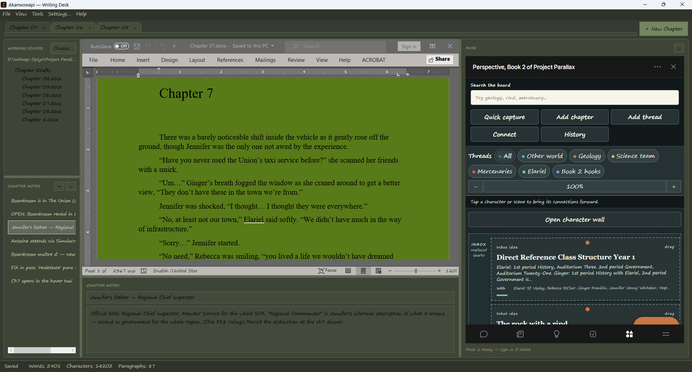

Chapter file tree
Your manuscript's chapters laid out as a file tree — .docx files only, so what you see is what Word opens.

Windows Development — Free
The Writing Desk
A Windows app for novelists, built by Sarah for her own books.
Your chapters, your notes, and your AI assistant — all in one desk, the way Sarah writes the Project Parallax series.
Free to use under the included license.

Your manuscript's chapters laid out as a file tree — .docx files only, so what you see is what Word opens.
Open chapters in tabs, drag them into the order you like, and rename a tab with a double-click.
Word runs embedded right inside the app, so you keep the ribbon, the formatting, and the tools you already know.
Your work saves itself as you write — no lost chapters, no remembering to hit save.
Every chapter keeps its own notes, right beside the text they belong to.
Your Muse assistant lives in a panel beside your manuscript, ready when you need a second pair of eyes.
Ask Muse in the side panel to build you a corkboard for your book — characters, scenes, and threads, all searchable and linked, so the whole story stays pinned in place while you write.
Nine light themes and nine dark themes, with a “Lets go dark” switch for late-night writing sessions.
Rounded tabs shaped like file folders, so your desk feels like a desk.
Free to use under the included license.